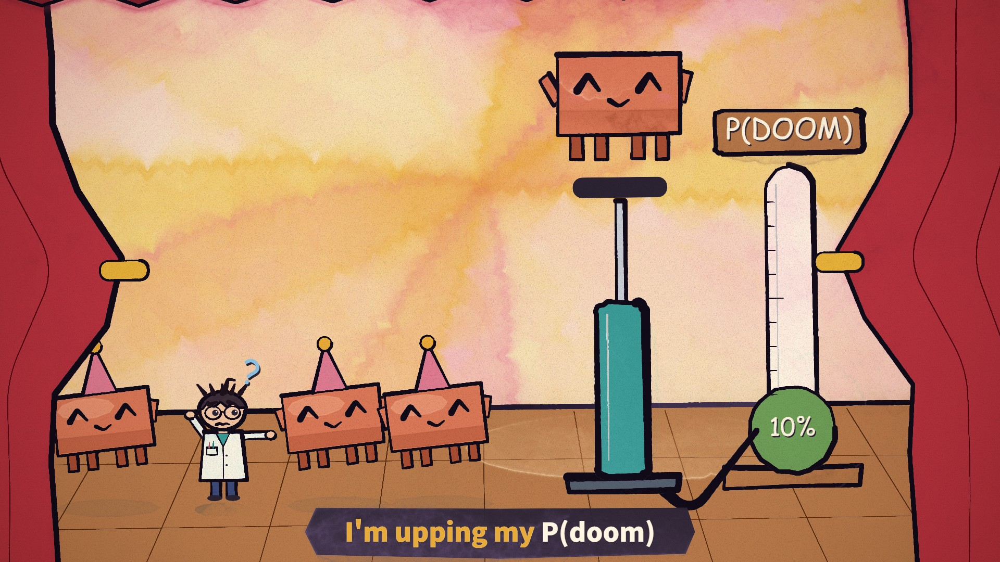

为什么能乱序渲染？
镜头直接由时间计算，随机种子也由时间决定。渲染第 100 秒无需先运行前 99 秒，因此能并行分配帧、重做局部片段。
CREATIVE CODE / 程序动画
AI 写分镜与动画代码，浏览器把代码画成水彩，再逐帧合成视频。
从真实画面出发，理解这种创作方式能做什么、如何复用。
01 / 看见效果

绘画水彩渗边 · 墨线 · 纸纹
角色表情 · 舞蹈 · 挤压伸展
镜头推拉 · 旋转 · 擦除转场
时间分镜 · 固定节拍 · 歌词
02 / 理解原理
创作阶段由 AI 或人编写分镜、角色和镜头代码；渲染阶段执行这些代码。已经写好的动画可以独立运行。
STORYBOARD.md → 每个镜头的动作
ANIMATION_GUIDE.md → 共用风格与接口
src/ch/*.js → 九个章节的画面代码镜头直接由时间计算，随机种子也由时间决定。渲染第 100 秒无需先运行前 99 秒，因此能并行分配帧、重做局部片段。
p5.brush 模拟水彩与墨线，纸纹覆盖整帧。线条扰动每秒更新 12 次，形成手绘线稿轻微变化的观感。
固定 88 BPM 与 0.21 秒偏移驱动节拍；歌词起止时间存于代码。P(doom) 表盘是预设剧情数值。
03 / 价值与使用场景
同一套形状、表情与动作接口跨镜头使用。制作系列内容时，角色与风格能积累为资产。
改节奏、动作幅度、颜色或镜头时间，修改对应代码即可。精确改动仍需要理解动画实现。
直接重绘关键时刻，再看分镜检查图。可以定位穿帮、布局和转场问题，逐次修正。
分镜与代码让创意变成能运行、能检查、能交接的项目；浏览器与 FFmpeg 负责输出。
围绕一首歌做水彩角色表演、视觉笑点和字幕。适合能接受二维卡通语言，并愿意设计每个镜头的创作。
采用判断
当前仓库是特定 MV 工程。做新作品需要重新编排镜头与时间，并承担水彩逐帧渲染成本。全自动歌曲理解、通用视频编辑界面和业务工作流需要另行开发。
REUSE / 补充复用指南
角色、绘画和导出管线可以积累；新故事的镜头、节奏和表演仍需要设计。展开模块，查看迁移时应改哪一部分。
已有资产：Clawd 和 Researcher 的形状、表情、帽子、肢体与舞蹈参数。
迁移工作：建立新角色的轮廓与配色，保留姿态接口；重新验收不同动作下的造型。
clawd.js ↗ · cast.js ↗已有资产：逐镜头分镜、共用角色与绘画接口、章节文件隔离、检查图验收方法。
迁移工作：为新题材写动作和转场；明确每章负责人、共用接口与验收时点，人工审看叙事是否清楚。
ANIMATION_GUIDE.md ↗本机样本 / 渲染工作量
下方只估绘制时间，不含写分镜、改代码和视觉返工。结果来自本机样本推算，实际速度看渲染日志。
正在读取本机测量数据…
并行收益未实测。多个页面共享显卡，无法保证按数量加速；六张静帧也不代表所有镜头的速度。输出 FPS 控制视频帧数，线条种子每秒更新 12 次控制手绘扰动，两者分别设置。
04 / 开始使用
准备 Node.js、Chrome 与 FFmpeg。在本研究库根目录运行：
npm --prefix projects/008-pdoom-video/tools ci
node projects/008-pdoom-video/tools/render-evidence.mjs --clip=23:26生成六张原始画面与一个无声片段；耗时取决于设备。
上游指南要求镜头是时间的纯函数；并行工作按章节分文件。作者自述 AI 创作流程，仓库没有内置模型调用服务。